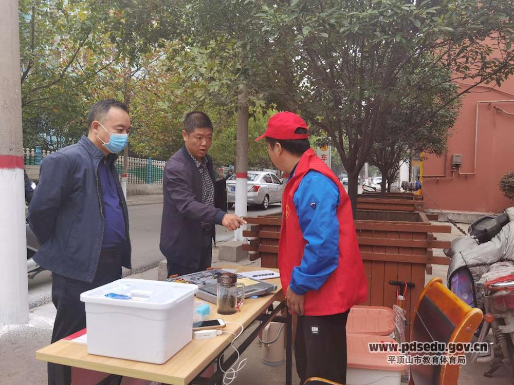
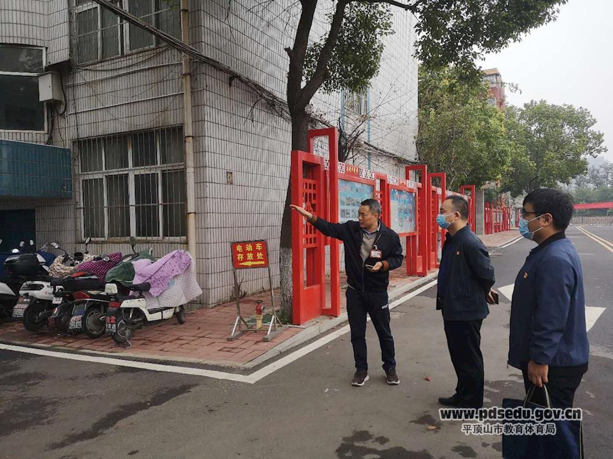

陈晓辉同志督导调研创文工作
10月10日上午，市纪委监委驻市教体局纪检监察组组长陈晓辉带领驻局纪检监察组及市教体局有关人员，对市教体局直属学校创文工作进行了督导调研。
陈晓辉一行先后来到市第四中学、市育才中学，对学校创文宣传氛围、档案资料、志愿服务、卫生环境等情况进行督导检查，针对督导中发现车辆乱停乱放、校园留有卫生死角、志愿服务站设置不规范等问题当场提出了整改要求。


陈晓辉在督导调研中指出，学校是展现一个城市文明素质的重要窗口，从目前看，个别学校距离测评标准还存在一定差距，市教体局和各个学校务必高度重视，加大工作力度，按照要求立即做好整改提高。要结合实际把创文工作抓细、抓深、抓实，将各项创建指标落实到日常教育教学的工作之中，努力形成倡导文明新风、践行文明行为的长效机制，让文明成为校园常态，为广大师生营造良好的教育教学环境。